id="js_content" style="">
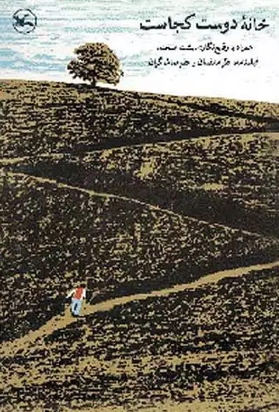
不同的国家盛产不同的电影。
美国盛产英雄。
韩国盛产真实事件改编。
中国盛产主旋律。
而有一个国家，因为特殊的政治、宗教环境，盛产儿童电影。
它就是伊朗。
从上世纪八十年代末开始，伊朗的儿童电影在各大电影节屡获大奖，引起世界性的关注和赞赏。
原来，伊朗不仅有核武器和战争，还有儿童电影和童真。
今天我们要介绍的就是其开山之作《何处是我朋友的家》。
此片获1987年德黑兰国际电影节最佳导演奖、1989年戛纳国际电影节艺术电影奖。
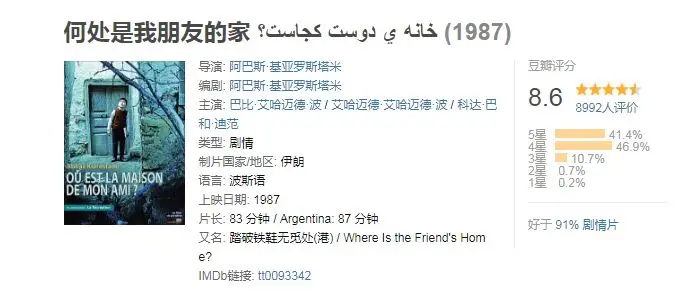
电影讲述的故事非常简单。
课堂上，老师正在检查学生的作业。
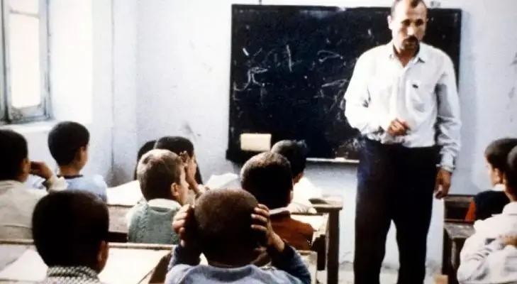
小男孩穆罕默德因为屡次没有将作业写在作业本上而受到老师严厉的批评。
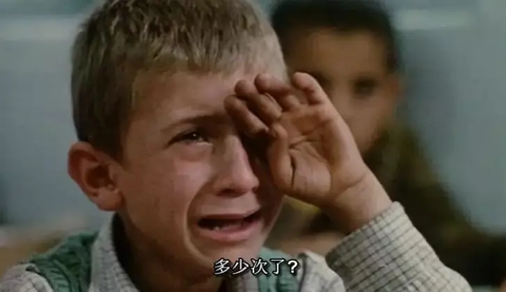
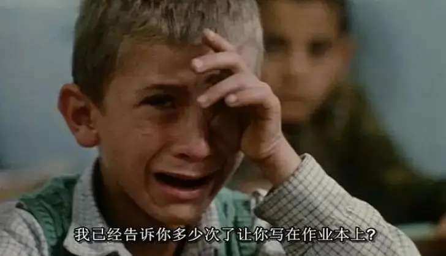
老师向他发出警告：如果下次还是这样，你就不要来上学了。
可怜的穆罕穆德只能委屈地抹着眼泪。
放学后，学生们纷纷回来了自己的家中。
写作业时，阿穆德忽然发现他竟然误将同桌穆罕默德的作业本带回来了。
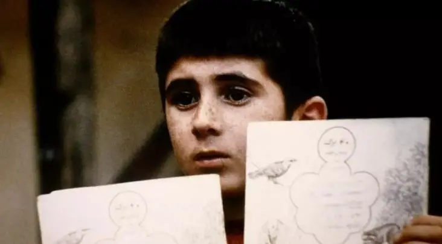
想到今天课堂上的情形。
阿穆德心里非常焦急。
他知道如果今天穆罕默德拿不到作业本，明天被老师发现了，穆罕默德会被开除。
阿穆德决定要将作业本送给穆罕默德。
但是，他只知道穆罕默德住在对面山里的村子里，并不知道他家的具体地址。
阿穆德向家人求助，但却无人理睬。
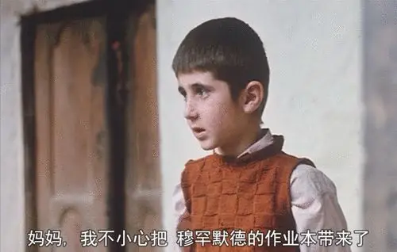
最终，阿穆德决定溜出去，自己去找穆罕穆德。
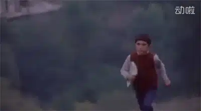
可是，没有人把阿穆德的事放在心上。
老人们聚在一起闲聊。
铁匠忙于赚钱。
成人世界用他们的规则和傲慢无视着小孩子的道德焦虑。
所以，阿穆德四处碰壁。
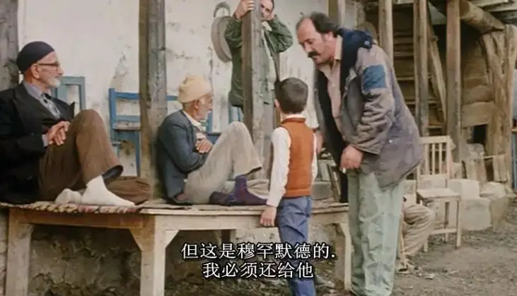
但是执着的阿穆德没有放弃，他依旧不停的奔跑，见人就问“你知道穆罕默德的家在哪儿吗？”
形形色色的人群中，一个穿着红色毛衣、蓝色裤子的瘦小身躯穿行其中。
就像是一张白纸上的一个小红点，虽然小，但却如此引人注目。
他的执着和童真是无聊冷漠的成人世界里的一抹暖色。
而这份温暖却早已被成人世界所遗忘和抛弃。
大人们见识广、经验足、会赚钱甚至拥有更多的知识。
但这些骄傲和资本却让他们丢失了简单和纯粹，他们丧失了俯下身子聆听孩子的谦卑。
面对阿穆德的请求，妈妈像是没有听见一样，只是不停地使唤阿穆德换尿布、拿奶瓶、买面包....
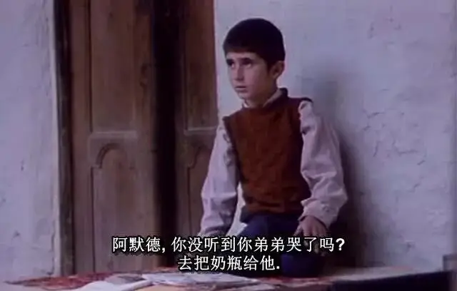
甚至大人们还会用不合理的规则去对待小孩子。
阿默德的祖父头头是道地对朋友讲叙教育后代的方式：
可以忘记每周给孩子零花钱，但一定要两个星期打一次。
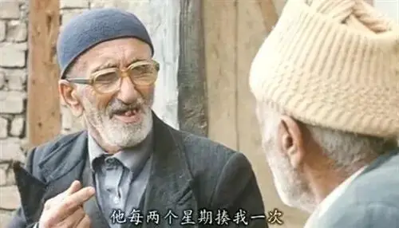
而电影中只有一个老木匠热心地帮助了阿穆德。
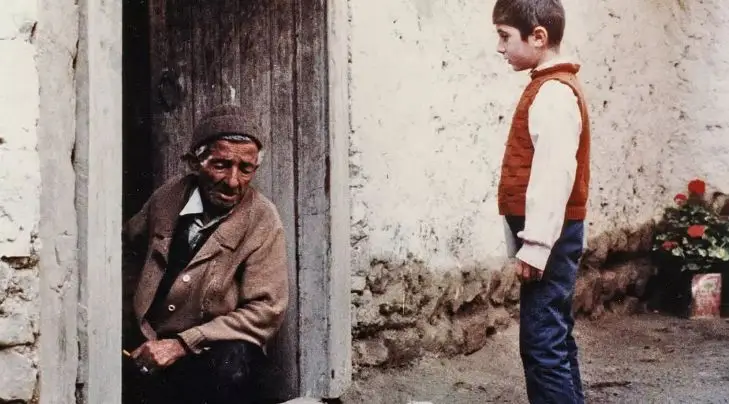
这是一个落寞的木匠，因为他见证了越来越多的年轻人抛弃了木门，选择了铁门。
这些年轻人认为铁门不会坏，可以用一生一世。
而老木匠看着年复一年使用的木门，不禁感慨：“铁门也许可以用一世，但他们不知一世有多长。”
这份感慨和整个电影的思想内涵不谋而合。
现代人往往在理所当然的“进步”和“成长”中丢死了最初的简单和温暖。
导演阿巴斯.基亚罗斯塔米用光影和色彩将木门拍的非常漂亮和温暖。
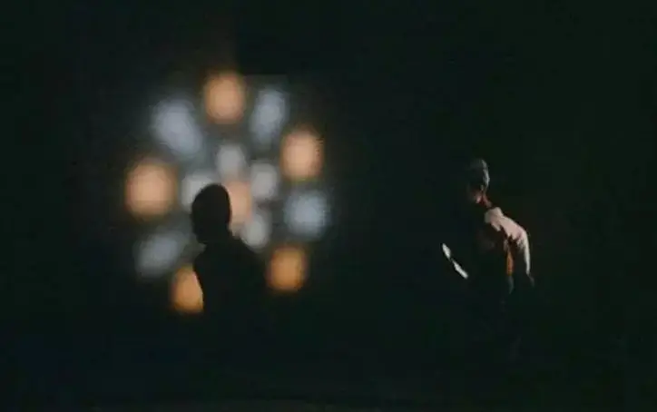
步履蹒跚的老木匠带着阿穆德终于来到了目的地。
当阿穆德激动地跑入院子里，他意识到这个“穆罕穆德”家并不是他同桌家。
为了不让老木匠失望，可爱的阿穆德将作业本偷偷地藏了起来。
天色已暗，阿穆德还是没有找到穆罕穆德，只能尽快回家。
回到家后，门外狂风大作，阿穆德心里依旧忐忑不安。
为了穆罕默德不被开除，最终阿穆德帮穆罕默德完成了作业。
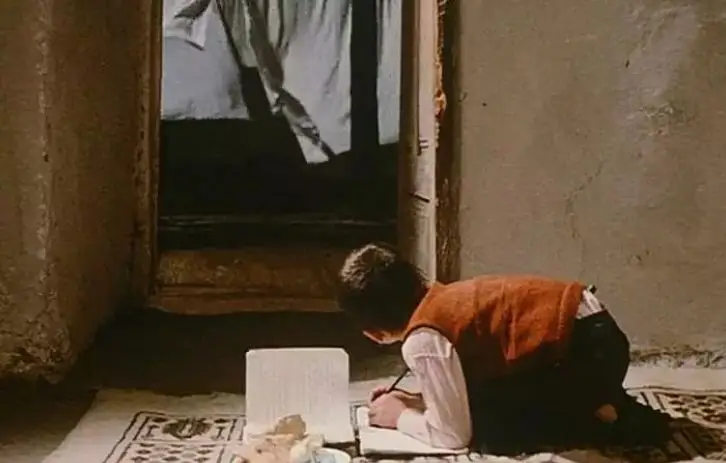
第二天，阿穆德上课迟到了。
所幸，他在老师检查穆罕穆德的作业本之前赶到了教室。
当老师打开作业本时，最暖心的画面出现了。
作业本里夹着一朵美丽的小花。
而这朵小花是老木匠送给阿穆德的。
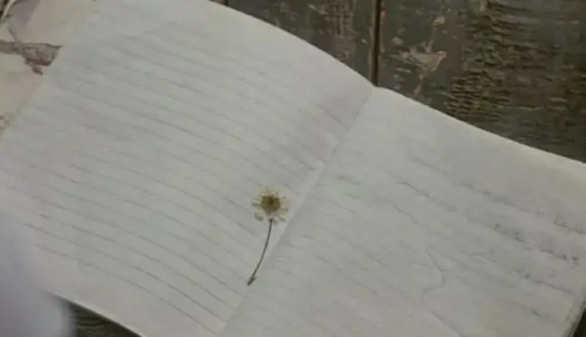
这不是一部简单的儿童电影。
阿巴斯在用这个故事找寻大家失去了的东西，那就是聆听的能力。
电影中几乎所有人都在自话自说，他们沉浸在自我的世界里听不进别人的话。
不仅仅是听不到阿穆德的请求，甚至是自己的家人、邻居，也无法沟通。
阿穆德四处询问，很多房屋的门却是紧紧关闭着。
这些紧闭的大门以及冰冷的铁门也象征着这种沟通、聆听的失丧。
这份失丧可以说是普遍的，不仅仅存在于闲散、贫穷的村庄，也存在于快节奏、丰富物质生活的城市。
大家不仅不能聆听，甚至无法对话，交流都只是闲扯和违心的话。
这不可以不说是一种人性的冷漠和麻木。
与这种冷漠形成鲜明对比的就是阿穆德和老木匠。
一个纯真，一个落寞。
一个生命刚刚起航，一个生命即将走到尽头。
但是他们都怀有温热。
当阿穆德急着回家时，年老的老木匠跟不上他的步伐，阿穆德却依旧很有耐心地陪着他慢慢的走。
而当阿穆德走在前面被狗吓的不敢动时，老木匠一步一步走上来时，慈爱地对他说，正是担心前面有狗，所以才硬撑着走过来。
最后作业本里那朵美丽的小花，更是迟暮之人传递给纯真小孩的温暖和力量。
而与电影丰富内涵交相辉映的是阿巴斯强烈作者化的电影风格。
阿巴斯在谈《何处是我朋友的家》的创作时说：
重要的场面是最先出现的：一个孩子朝着小路尽头的一棵树跑去，最后消失在山里。
拍摄这部影片之前，这个影像在我脑子里已存在了好几年。
我的潜意识被山丘和孤树吸引，我在影片中企图忠实重构的正是这样一幅影像：山丘、路、孤树是构成这部影片的主要构成因素。
因此，在阿巴斯的电影里，这些场景和人物拥有同样的地位。
都是电影的主角。
这样的思考也体现在阿巴斯的电影语言中，他说：
特写并不必然意味着以极近的距离拍摄对象，宽阔远景的长镜头也可以是一种特写。
正是阿巴斯如此深刻独到的认识，电影中的远景镜头不只是交代背景，更是拥有了特写镜头聚焦下的情感力量。
这是一种深情的凝视。
拿电影中最著名的长镜头为例：
这个镜头里，阿穆德奔跑在“之”字形的山坡上。
镜头一直持续到阿穆德穿越整个山坡才结束。
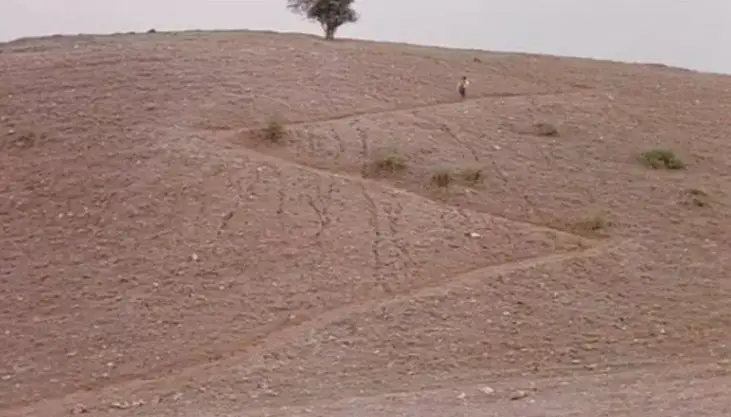
在这个长镜头里，奔跑的小孩是主角，像人生一样曲曲折折的“之”字型山坡是主角，远处的孤树也是主角。
这个镜头可以说是整个电影甚至整个人生的浓缩。
在阿巴斯的眼里，这一切都是如此的重要，他深情地凝望着枯黄背景中流动着的生命和纯真，舍不得将其中断。
除了凝视，阿巴斯更擅长将电影拍得“简单”。
曾经有人问过宫崎骏的御用配乐大师久石让，什么样的音乐最好。
久石让说，“越是简单的音乐越能深入人心，我的音乐还是太复杂....”
同样，阿巴斯也有类似的想法：
谁想在苍穹最高处翱翔，就必须忘记地上的谷粒......
我的电影经常是一种极简主义的发展，省略了一切可以省略的因素。
在本片中，很多的细节都被阿巴斯省去了，比如说最后阿穆德为什么上课迟到。
是昨晚写作业写晚了，还是说第二天一大早在路上没有等到穆罕默德。
甚至，阿穆德的家庭也没有过多交代，路上碰到的人也没有设计很多细节去刻画和表现。
但正是这样的简单使得电影更加真实和朴实无华。
而无论是对长镜头的认识，还是对极简的追求，都是基于阿巴斯对生活的观察和思考。
他的思考和追求并没有止于对伊朗社会的批判和政治隐喻，而是更深地追求内在的真实和纯粹，在表现人类所共有的真实。
阿巴斯表示：
我们生活在一个充满虚假和庸俗的世界，艺术的职责应当是寻找生活的真实，也就是努力接近人的本质存在。
我的每一部电影都是通向这个目的地的一把钥匙，真实是不可以得到的，只能接近它。
所以阿巴斯的作品虽然“简单”却能呈现出更丰富的内涵，也更能穿透各个年龄段、各个国家观众的心灵。
这也是伊朗儿童电影的成功之处，不论是小孩还是大人，都会在电影中收获感动和真实。
因此，阿巴斯.基亚罗斯塔米受到了戈达尔、黑泽明、马丁.斯科塞斯、迈克尔.哈内特等大师的广泛盛赞。
戈达尔甚至这么评价阿巴斯：电影始自格里菲斯，止于阿巴斯。
这是多么高的评价！！
关注并回复：何处是我朋友的家
获取电影资源
相关推荐：
100双绝望的眼睛
奥斯卡影帝，你把自己演死了
这里没有挑逗你眼目情欲的小鲜肉
也没有挑动你肉体情欲的段子
更没有膨胀你今生骄傲的鸡血
我们只在乎那些最质朴真诚的作品
在那里我们才能恢复真正的想象力
我们也坚信这才是我们真正需要的

ID:Six_hundred_hits
长按二维码，一键关注
【六百击】
-END-
电影评论
尽情分享朋友圈

苹果打赏
通道
小提示：文末广告是腾讯配送广告，内容与本号无关，但您的每次点击（无需反复点）都会给平台带来几毛收益，欢迎您点击支持六百击。